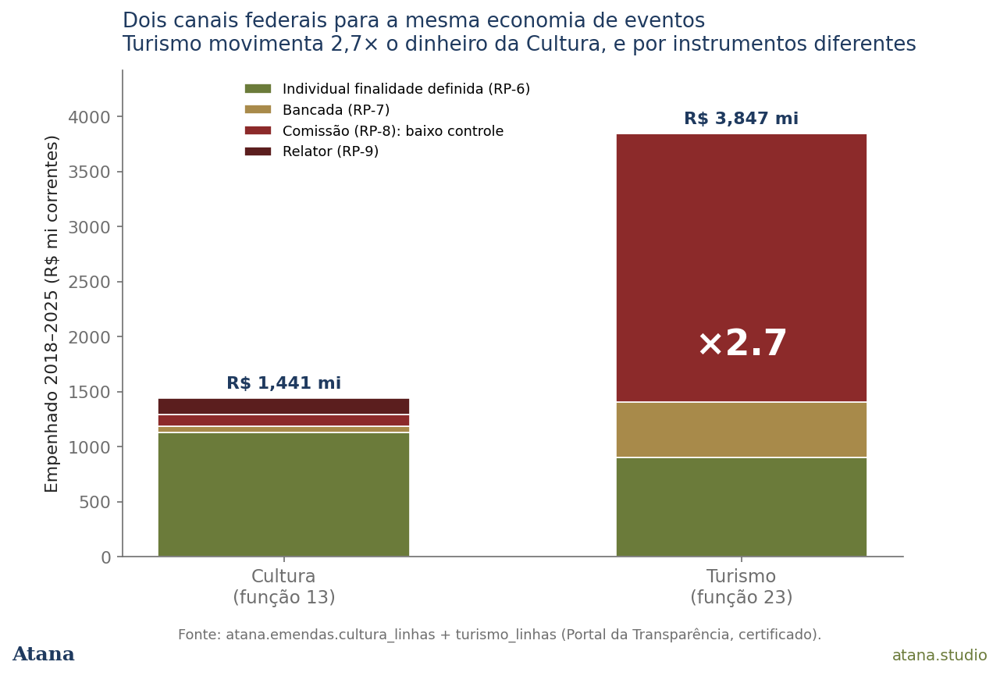
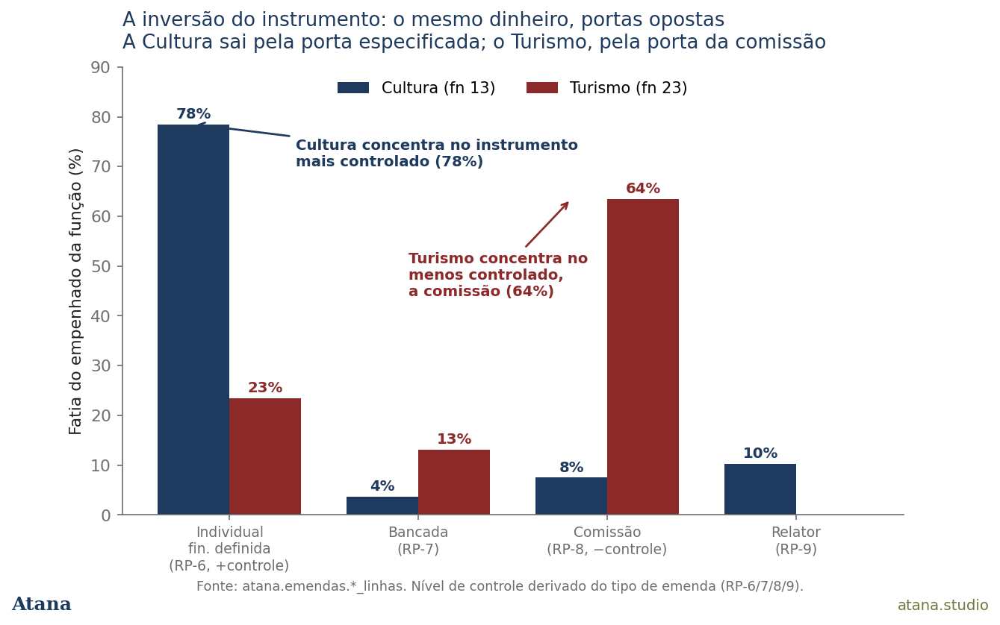
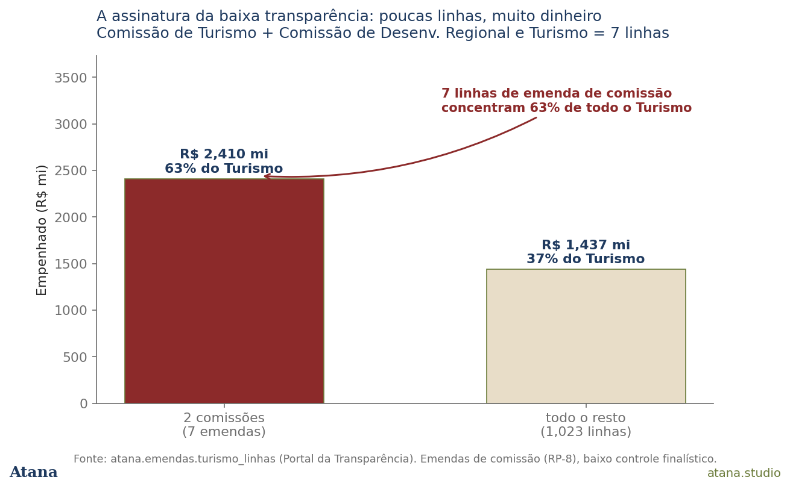

The signal
There is a strong public debate about politicians using parliamentary amendments to pay artists — regional shows especially, with less oversight than the traditional cultural-funding mechanisms. The intuition that there is a low-transparency federal channel for events money is correct. But it points to the wrong place in the budget.
Look at the amendments classified as Culture (Função 13) and you don't find that pattern. R$ 1.44 billion committed 2018–2025, 78% through the most-specified instrument — the individual amendment with defined purpose, which states what the money is for. They execute well (84% paid). And they are directed mostly by the cultural-policy left: Erika Kokay, Benedita da Silva, Jandira Feghali, Orlando Silva, Marcelo Calero, Paulo Paim.
The money the debate is about sits one budget function over: Tourism (Função 23). And there everything inverts.
Why it matters
The events economy — festivals, São João, Carnaval, regional shows — is not booked in a single place in the federal budget. Part goes out as Culture; the larger part goes out as Tourism. The two halves have opposite governance, opposite coalitions, opposite control levels. And cultural-policy oversight — the councils, the SNIIC, the Culture Ministry itself — sees only the smaller half.
This carries three implications:
-
For public debate: "low-oversight culture amendments" describes the situation poorly. The Culture amendments are small, specified and well-monitored. The big, low-control money is in Tourism — off the radar of those debating cultural policy.
-
For oversight: budget classification determines who watches. Events money labelled Tourism escapes the cultural accountability instruments (CNIC, funding accountability) and lands in a circuit — committee amendments — that is structurally less purpose-bound.
-
For the book: this is the fourth federal funding pipe, alongside Rouanet (Note #22), PNAB and LPG (Note #21). And it is the only one whose main mass of money leaves through the least-watched door. Methodological pluralism taken seriously: the same question, two budget functions, two answers that only reconcile once you name the architecture.
What the data say (1) — two pipes for the same economy

Stacking the two by control level, Tourism (R$ 3.85 bn) is 2.7 times the Culture pipe (R$ 1.44 bn). But the difference isn't only size — it's composition. The Culture bar is dominated by the controlled-instrument colour; the Tourism bar by the committee colour.
What the data say (2) — the instrument inversion

This is the central finding. Amendments are classified by instrument, and each instrument carries a different level of purpose-binding oversight. The individual amendment with defined purpose (RP-6) specifies the destination; the committee amendment (RP-8) is a block allocation, far less specified and historically flagged by oversight bodies as less traceable.
In Culture, 78% of the money leaves through the more-controlled door (defined-purpose individual) and only 8% through committee. In Tourism, the proportion inverts: 64% leaves through committee and only 23% through individual. Two functions, the same kind of cultural-events spending, opposite doors.
What the data say (3) — few lines, much money

The signature of low transparency is concentration. Seven committee amendments — four from the Tourism Committee, three from the Regional Development and Tourism Committee — hold R$ 2.41 billion, 63% of the entire Tourism pipe. (Each table row is one execution line in the Portal — one per amendment execution allocation; here the seven lines are seven distinct amendments, seven codigo_emenda, each a single block allocation of R$ 62 mn to R$ 668 mn, concentrated in 2023–2025.) It's not 1,030 deputies spreading money; it's two Congressional committees moving nearly two-thirds of the money through seven acts. The rest of the pipe — over a thousand lines — splits the remaining third.
The rest of the Tourism director roster confirms it's a different coalition: Northeast and regional state delegations (Bahia, Sergipe, Alagoas, Rio Grande do Norte, Paraíba, Piauí — the heartland of São João and regional music) and centre-right individuals (Soraya Santos, Arthur Lira, Magno Malta, Marcel Van Hattem), with Paulo Paim as the lone left presence. A sharp contrast with the cultural left that directs Função 13.
One number that doesn't yet close — and that we won't force
The Tourism pipe also executes poorly: of the committee amendments (63% of the money), only 25.5% was actually paid; Tourism overall pays 38%, against Culture's 84%. This may be (a) censoring — recent cohorts still inside their payment window — or (b) structural: the committee "reserve" that commits much and realizes little. The current corpus does not separate the two — it lacks the per-line status field, to be added in a later pass. We record the number and the doubt, without picking the answer.
What these data do NOT say (explicit boundary)
This Note maps the channel: who directed, which instrument, where. It does not identify the recipient — the company or artist that received the payment. Therefore:
- We do not claim "R$ 3.85 bn went to sertanejo cachês." Tourism also funds infrastructure, event structure and tourism promotion. How much becomes an artist fee requires tracing the contracts (next step —
despesas-execucao→ recipient CNPJ). - We attribute no musical genre or party to any payment. The names appear as amendment directors, not as defendants in anything.
- The finding is about budget architecture and governance, not individual conduct.
What is proven is the channel: bigger, less controlled, of a different coalition, and invisible to cultural accounting. Whether that channel reaches the artist's fee — and how — is the investigation these data now make possible, but do not yet perform.
Central caveats
| # | Alert |
|---|---|
| A23-W1 | Channel, not recipient. The tables carry author, instrument, locality and subfunction — not the payee. No claim about who was paid without the contracts layer. |
| A23-W2 | Tourism ≠ shows. Função 23 / subfunção Tourism funds infrastructure, promotion and events. Not reducible to artist fees. |
| A23-W3 | Control level is derived from amendment type (RP-6/7/8/9), verified against the certified distinct-type dump. "Less control" refers to the instrument's degree of purpose-binding, not illegality. |
| A23-W4 | Tourism execution (38%) mixes censoring and committee-reserve — not separated in this version (lacks the status field). |
| A23-W5 | Função 13 is a floor (E2): cultural money in special transfers without defined purpose carries no function and is invisible to both tables. The absolute-lowest-control channel may be larger still and unmeasured. |
| A23-W6 | Political sensitivity. Every amendment has a parliamentary author. This Note names directors, not conduct; any extension to identifying recipients passes through editorial review. |
What to watch next
- Contracts (next step): trace amendment → action → contract → recipient CNPJ, to answer whether Tourism money reaches fees and whose. Under strict editorial review.
- The per-line status field, to separate censoring from committee-reserve in the 38% execution finding.
- Special transfers without defined purpose (the "budget PIX"): structurally function-less, currently invisible — the absolute-lowest-control frontier.
Sources
| Source | Role | Table |
|---|---|---|
Portal da Transparência (CGU) — /emendas API |
Amendments by function, author, instrument | atana.emendas.cultura_linhas (fn 13) · turismo_linhas (fn 23) |
Certified extraction via a 5-check protocol (_atana_intel/phase11_emendas_certify.py); amendment-type→RP mapping verified against a distinct-values dump; calculations reproducible via note24_compute.py.
How to cite
Roque da Silva Junior, J. (2026). The fourth pipe leaves through the least-watched door: Culture vs Tourism amendments in certified microdata (v1.0). Atana Note #24. atana.studio/notes/24/.
Version history
| Version | Date | Change |
|---|---|---|
| 1.0 | Jul 2026 | Initial publication. Two-function structural finding (Culture fn13 × Tourism fn23); the instrument inversion; committee concentration; 3 charts. Channel scope (no recipient); boundary and political sensitivity foregrounded. |